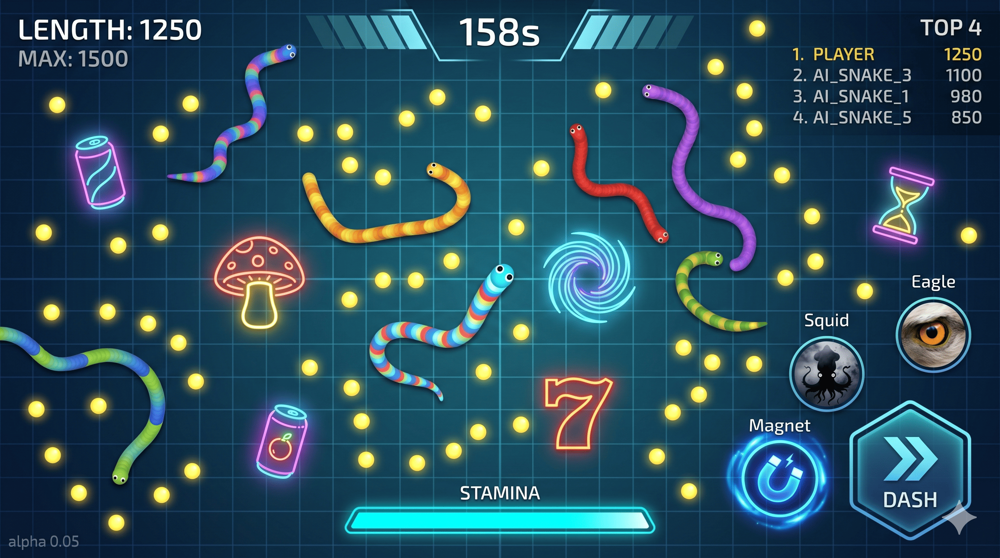

截斷、奪取、制霸！
這是一場 8 條小蛇成長到大蛇的生死較量！
在短短 180 秒的戰局中，你將與對手在充滿隨機性的戰場上展開對決。你可以選擇猥瑣發育，也可以選擇利用加速截斷對手。這不只是比反應，更是心理與策略的極致博弈！
在地圖中自由穿梭，攝取發光食物，打造你的巨蛇。
利用青色體力進入加速模式。切開對手身體，奪取他們的養分！
利用隨機道具與三大技能，即便長度落後也能瞬間反殺。
對齊競技手遊規格的 HUD 配置

左上顯示長度/最高分；右上僅顯示前 4 名競爭者。
底部的青色體力條。衝刺、反擊的核心能量指標。
右下角 DASH 大鍵 與三大技能扇形佈局，支持直覺盲操。
正上方顯示 180s 倒數。掌握節奏，在最後時刻逆轉勝。
| 碰撞情境 | 🔥 雙方衝刺 (Dash) | ⚡ 僅一方衝刺 | 🐢 皆未衝刺 |
|---|---|---|---|
| 頭對頭 (Head-to-Head) | 雙方強力回彈 | 衝刺方獲勝 | 長度大者獲勝 |
| 頭對身 (Head-to-Body) | 攻擊方回彈 | 截斷 (Cut) 成功 | 攻擊方死亡 |
* 註：幽靈披風狀態下無視所有碰撞；重生後享有 2.5s 重生保護。
死亡立即縮減 50% 長度，並進入 3s 復活倒數。此機制確保戰場資源循環，避免強者恆強。
系統自動避開石頭，並與敵蛇頭部保持 500px、身體 120px 的絕對安全距離，防止出生即碰撞。
重生瞬間自動朝向視野最開闊、威脅度最低的區域，為玩家爭取反應時間。
重生後獲得短暫穿透屬性。可調整航向並游離危險區，此狀態下無法進行攻擊。
冷卻：30s | 持續：8s
將吸附半徑從 45px 提升至 120px。適合在大規模截斷戰場後，快速收割所有養分。
冷卻：20s | 持續：6s
在蛇身路徑留下致盲雲朵。進入其中的敵方玩家將損失 90% 視野，持續 5s。
冷卻：25s | 持續：12s
相機鏡頭縮放至 0.75x。提供極致的戰場視野，提前偵測對手動向與關鍵道具位置。
| 道具名稱 | 最多存在 | 重生 CD | 持續時間 | 詳細效果說明 |
|---|---|---|---|---|
| 🍄 巨大蘑菇 | 2 | 25s | 10s | 體型 1.5x。獲得「免疫截斷」霸體。 |
| 🌀 磁力漩渦 | 2 | 20s | 瞬間 | 瞬間將 R=400 內所有食物暴力吸入。 |
| 👻 幽靈披風 | 2 | 25s | 10s | 10s 透明狀態，可穿過所有蛇身。 |
| 7️⃣ 幸運 7 | 1 | 45s | 10s | 攝取食物價值翻 **7 倍**。搭配磁鐵極強。 |
| 🥤 活力蘇打 | 3 | 15s | 瞬間 | 瞬間補滿 **100 點體力**，解除超載。 |
| ⏳ 時光沙漏 | 2 | 20s | 瞬間 | 恢復至本局 Session Max 長度。 |
180 秒，誰能奪下最終皇冠？
核心規則： 最終排名依據 「累積攝取量 (Total Eaten)」 判定。
即便死亡導致長度縮減，你的積分依然保留。這不只是生存，更是一場關於資源奪取的數據競賽！